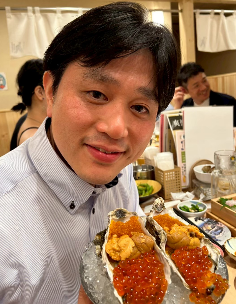

総合内科・総合診療は、患者さんの「人生そのもの」を診る仕事です。 志を共有できる仲間と、一緒にチーム医療を作っていきましょう。
Generalismを通じて
人々がその人らしく過ごせるように
当たり前のことを当たり前にできる医師を教育し、
新たな知見を創造・発信する。
病院総合医(Hospitalist)としての高度なマネジメント能力と、総合診療・家庭医的な全人的ケアを両立。両プログラムが同時に学べるのは当院は日本でも屈指の環境
指導医-後期研修医1-2名-初期研修医1名の屋根瓦式教育。
教育的なチームカンファレンス、ベッドサイドでのティーチングを通じて、安心してレベルアップできます。
指導医の監督下で主治医としての振る舞いも勉強できます
長崎県内だけでなく
熊本赤十字病院 救急・集中治療科
麻生飯塚病院 集中治療科
手稲渓仁会病院 総合内科・家庭医療
東京医療センター 総合内科
神戸緩和ケア
(甲南医療センター 緩和ケア科)
(清水メディカルクリニック 訪問診療)
(岩本診療所 訪問診療)
内科専門医取得に必要な症例は当科での研修ですべて集まり記載可能。
学会発表、症例報告、臨床研究など、科研費を取ってこれるほど熟知した指導医がアカデミックな発信も強力にサポートします。
全国規模の
研修医・医師・コメディカル向け
オンライン勉強会
「みんほす！」のディレクター在籍
教育計画の立案・実践、執筆、動画編集、SNS発信なども学べます
サブスペ専門医
Hospitalist
地域医療・在宅医療
教育専攻など
研究専攻など
専攻医の「志」に合わせた
キャリアデザインを一緒に考えます
3年目以降、その人の目指す医師像に合わせて、さまざまなローテーション設計が可能です。
下は代表的なモデルケースの一例です。
総合内科・総合診療は、患者さんの「人生そのもの」を診る仕事です。 志を共有できる仲間と、一緒にチーム医療を作っていきましょう。
重症例から慢性期まで一貫して診る中で、「自分にしか出せない価値」を 少しずつ形にしています。困ったときはチーム全体で一緒に考える文化があります。
外来や在宅、地域連携を通じて、「生活」に寄り添う医療の面白さを日々感じています。 住民・多職種との関係づくりも、ここで培える大事な力です。
離島では、救急も慢性期も小児も高齢者も、一つのチームで診ます。 責任は大きいですが、そのぶん成長のスピードも段違いです。
病院見学、オンライン説明会は随時受け付けています。
キャリアの悩み、プログラムの詳細など、お気軽にご連絡ください。
※Zoom等でのカジュアル面談も可能です。